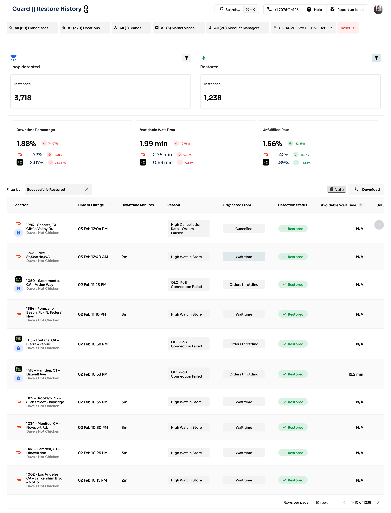
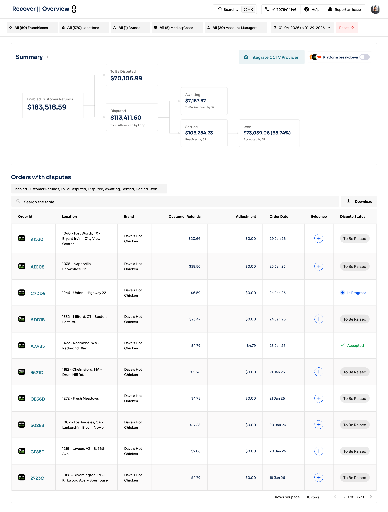
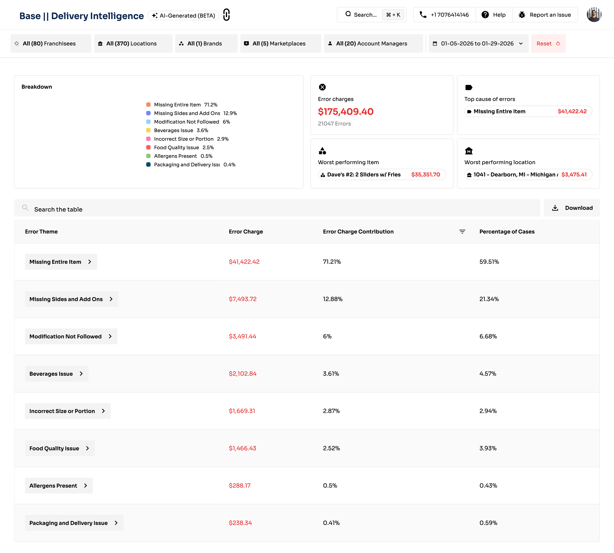

The Problem: Sometimes Guard restores a store, but it goes right back down within minutes.
The root cause (POS disconnected, middleware crashed) hasn't been fixed. If Guard kept blindly retrying, orders would flood a broken store.
1st downtime
Guard restores → ✅
→
2nd in window
Skips → ⚠️ ALERT
→
3rd+ in window
Skips → 🔴 CRITICAL
→
Window expires
Auto-resumes ↺
DoorDash
Most chains: 1 attempt / 60 min Some (BK, DTF): No limit
UberEats
Most chains: 1 attempt / 180 min Some: 1/60min + 2/180min
Why different?
DD stores stabilize faster. UE takes longer to sync.
Example: UberEats store (180 min window)
10:00 AM Down → Restore ✅ |
10:45 AM Down → Restore ✅ (1 attempt used) |
11:30 AM Down → RATE LIMITED ⚠️ |
12:15 PM Still down 🔴 |
1:00 PM Window expires → Auto-resumes ↺
⏰ Time (Auto)
Window expires naturally
📱 SMS "2" or Slack
One-time bypass (use after fixing issue)
😴 SMS "1" (Snooze)
Pauses Guard entirely until end of day
Rate Limit
• Automatic (too many attempts)
• Stops only auto-restore
• Still sends notifications
• Clears when window expires
Snooze
• Manual (you choose)
• Stops restore AND notifications
• Complete silence
• Clears at end of day
How Downtime % Is Calculated
Total Minutes Offline
÷
Total Scheduled Operating Minutes
=
Downtime %
Store is scheduled 10 AM – 10 PM = 720 minutes
Store was offline for 45 minutes
45 ÷ 720 = 6.25% downtime
In The Product: Guard

Screenshot: Guard → Restore History
Loop detected:3,718
Restored:1,238
Downtime:1.88%↑74%
Wait Time:1.99 min
Unfulfilled:1.56%↓13%
How Lost Sales Is Calculated
Store's Avg Hourly Revenue
×
Hours Offline
=
Lost Sales
Based on the store's own historical sales for that day and hour
Store averages $150/hr on Friday lunch
Store was down for 2 hours
$150 × 2 = $300 lost sales
How Sales Saved Is Calculated
Staying Informed
⚡
Real-Time
Instant alert per event. Store down, restored, or failed.
SMS + Email
📰
Digest
Batched summary every 30 min. Less noise, same coverage.
SMS + Email
📄
Weekly Summary
Full performance report. KPIs, worst locations, top reasons.
Email
The Guard Loop
👁
WATCH
Continuous, 4 methods DoorDash + UberEats
🔧
FIX
Auto-restore Minutes, not hours
⚠
ESCALATE
Stops when root cause persists
📄
REPORT
Real-time, digest, weekly
The question isn't whether stores go offline. They do.
⚖
RECOVER
Chargeback Recovery
Guard Kept the Store Online. But Money Still Leaks.
✓ STORE IS ONLINE — Orders are flowing
Customer gets food
But reports a problem. Platform refunds & charges the restaurant.
Customer never gets food
Order missed or cancelled. Restaurant loses the sale entirely.
↓
Either way, money leaks. Recover gets it back.
Every Order Lands in One of Two States
Fulfilled — But the Customer Reports a Problem
✓ FULFILLED — Customer received food
↓
Customer reports a problem
Wrong items • Missing items • Quality issues
↓
INACCURATE ORDER
Platform refunds customer, charges the restaurant
Unfulfilled — Missed or Cancelled
✗ UNFULFILLED — Customer did NOT receive food
😶
MISSED
Order came in but was never completed Not accepted in time • Accepted but never made
✋
CANCELLED
Someone stopped the order Store • Customer • Driver • Platform
Why Do Orders Go Unfulfilled?
We know unfulfilled orders split into missed and cancelled. But why do they happen?
MISSED
If auto-accept is ON:
• Order accepted but kitchen never made it
• Ticket lost, printer failed, staff didn't see it
If manual accept:
• Nobody pressed accept in time
• Tablet off, POS disconnected, too busy
CANCELLED
• Store: Out of ingredients, kitchen overwhelmed
• Customer: Changed mind, waited too long
• Driver: No driver available, gave up waiting
• Platform: Fraud, address issue, system error
How Does the Restaurant Actually Lose Money?
You now know what goes wrong — fulfilled but inaccurate, or unfulfilled.
Now let's follow the money. Not all losses disappear the same way.
💸
DEDUCTED
Platform owed the restaurant, then deducted it
from a future payout.
🚫
NEVER PAID
Order never completed, so the restaurant
was never paid at all.
Fulfilled Losses: Customer Refunds
FULFILLED → INACCURATE
customer_refunds
Platform refunded the customer for a quality complaint.
Deducted from the restaurant's payout. CUSTOMER_REFUND transaction
But not every error costs the restaurant
Sometimes the platform pays for the refund itself — e.g. for promos, first-time buyers, or goodwill.
The restaurant wasn't charged, so there's nothing to recover.
In the data, this shows as merchant_charged = false. "I see errors but no losses" — this is why.
Unfulfilled: Was Payment Owed?
Order is unfulfilled. Customer didn't get food.
What happens to the money depends on one thing:
Did the platform owe the restaurant for this order?
Yes — payment was owed
Platform processed the order and owed the restaurant.
Now it deducts it from a future payout.
Restaurant sees less money in their bank.
unfulfilled_refunds
UNFULFILLED_REFUND
No — never paid
Order missed or cancelled before payment processed.
Restaurant gets $0.
No deduction needed — the restaurant was never owed anything.
unfulfilled_sales
CANCELLED_NOT_PAID / MISSED_NOT_PAID
Unattributed: Losses Without an Order
unattributed_customer_refunds
The order tree covers fulfilled and unfulfilled — orders we can identify.
But some losses can't be matched to any specific order.
Bulk platform adjustments. Credits without order IDs.
Grouped by payout date, not order date.
Numerator includes cancelled + missed + unattributed wins.
Denominator is inaccurate only.
Why? The restaurant only sees inaccurate charges on their statement.
But Loop recovers across all loss types — so wins can exceed what they know about.
Win rate can exceed 100%. By design.
In The Product: Recover

Screenshot: Recover → Overview
Enabled Refunds:$183K
→ Disputed:$113K
→ Settled:$106K
→ Won:$73K(68.74%)
Date Lag: Recover vs Balance
Same money. Different dates.
There's always a 2–6 week lag between Recover and Balance.
Converges over a quarter.
💬
Re-Engage
Customer Recovery
The Review Problem
📊
Volume
100 locations = 500+ reviews per week across DoorDash and UberEats
⏰
Manual = Impossible
Each response takes 5-10 minutes. Read, craft, decide on coupon, post. Full-time job for multiple people.
📅
Platform Deadlines
DoorDash: 7 days. UberEats: 14 days. Miss it? Can't respond at all.
💸
The Real Cost
Unhappy customer who doesn't hear from you = customer you'll never see again
What Is Re-Engage?
Loop's automated review response system.
Responds to customer reviews on DoorDash and UberEats at scale — using AI-generated responses or templates you define.
The hook: Attach promotional coupons to responses.
Dissatisfied customer gets personalized apology + coupon = chance to win them back.
The result: Thousands of reviews handled without manual effort.
Every review gets a timely response. Every unhappy customer gets a chance to come back.
Three-button system Thumbs Down = Negative Thumbs Up = Neutral Loved = Positive
Why this matters: The appropriate response depends on the rating.
5-star needs a thank you. 1-star needs an apology + recovery offer.
Customers can rate with or without written feedback.
A 1-star with no text ≠ 1-star with "hair in my food." Re-Engage handles both differently.
Two Response Types
🤖
AI Response
GPT-4 reads the review and generates a unique, contextual response.
Customer complained about cold food? AI acknowledges the cold food specifically.
📝
Template Response
You write templates. System picks one.
Multiple templates for variety.
Variables like {customer_name} and {coupon} filled automatically.
When to use each: AI = Reviews WITH feedback (responds to specific complaints) Templates = Reviews WITHOUT feedback, or when you want tighter brand control
Tone adjustment:Negative → Apologetic |
Neutral → Professional |
Positive → Your configured tonality
Constraints:
≤300 chars (DD) or ≤500 chars (UE) | Customer name MUST appear | Coupon MUST be mentioned if given
Example: Mike • 1-star • "Burger was cold and fries were missing" • $10 coupon
"Mike, we're so sorry your burger arrived cold and you were missing fries. That's not the experience we want for you. Please accept $10 off your next order — we'd love a chance to make it right."
Example: Sarah • 5-star • "Best tacos ever!" • No coupon
"Sarah, you just made our day! So glad you loved the tacos. Can't wait to serve you again!"
Configuration: Matching Criteria
Configurations are rules: which reviews to match and how to respond
📱
Platform
DoorDash, UberEats, or both
⭐
Rating
1-2 stars for recovery, 5 stars for thank-yous
👤
Customer Type
New or existing? Different coupon strategies
📍
Location
All stores or specific ones?
Configuration: Coupon Settings
Coupons are configured per platform — different options available
DoorDash
Fixed amount only
$5 | $10 | $15 | Custom
No minimum order requirement
UberEats
Fixed amount + minimum order
$5 | $11 | $20
e.g., "$11 off orders over $15"
Strategy:Bigger coupons for negative reviews (recovering relationships).
Smaller/no coupons for positive reviews (they already love you).
Example Configurations
Negative Review Recovery
AI • Apologetic
1-2 stars + Thumbs Down | Both platforms | All customers | With or without feedback $10 DoorDash | $11 UberEats (min $15)
New Customer — 3 Star
AI • Enthusiastic
3 stars + Thumbs Up | Both platforms | New customers only | With feedback $5 coupon — encourage retry without overspending
Positive Review Thank You
Template • 3 variations
4-5 stars + Loved | Both platforms | Existing customers | With feedback No coupon — they already love you
Note: If a review matches multiple configs, the system warns about overlap. Be intentional about coverage.
The Re-Engage Pipeline
📥
Ingest
Pull reviews from platforms
→
🎯
Match
Find matching configuration
→
🤖
Generate
AI or template creates response
→
✓
Validate
Check name, coupon, length
→
📤
Queue
Ready to send to platform
Re-Engagement Metrics
How do you know if Re-Engage is working? Did customers actually come back?
Re-engagement Rate
Of customers who received a response, what % placed another order within 7 / 14 / 30 / 90 days?
Voucher Lift
How much higher is re-engagement for customers who got a coupon vs those who didn't? → Tells you if coupons are worth the cost
Example
1,000 customers got responses with coupons. 250 re-ordered within 30 days = 25% re-engagement.
Without coupons: 10-15%. Voucher lift = +10-15 percentage points = hundreds of customers saved.
Response Windows
7
days
DoorDash window
14
days
UberEats window
Best Practice: 24-48 hours
The faster you acknowledge the issue, the more likely they give you another chance.
Re-Engage generates responses daily — always inside the window.
Re-Engage is your first-line response — handles volume and speed.
Converting that angry customer into a loyal fan? That requires great food and service on the next order.
📊
State of the Union
OPERATIONAL INTELLIGENCE
Guard and Recover Fix What Broke
🛡️
GUARD
Fixes downtime after it happens
💰
RECOVER
Wins back money after it's lost
But neither asks WHY
Which stores keep failing? What patterns are we missing?
Are problems getting better or worse?
📊
SOTU
Shifts from fix what broke → fix why things break
Three Reports, Three Questions
🏆
Leaderboard
Which stores are best and worst?
📏
Benchmark
How do we compare to industry and top performers?
🔍
Problematic Stores
Which stores are repeat offenders, and why?
In The Product: Delivery Intelligence

📸 Screenshot: sotu-delivery-intel.png
Save screenshot from app.tryloop.ai → Base → Delivery Intelligence
Error Charges:$175,409(21K errors)
Top Error:Missing Entire Item$41K
Worst Item:Dave's #2$35K
The diagnostic power of SOTU — from aggregate loss to specific item at specific store.
What You Receive
📁 SOTU_Report.zip
📄 Leaderboard.pdf — every store ranked
📄 Benchmark.pdf — vs chain, industry, top 10%
📄 Summary.csv — raw data for ops managers
📁 Diagnostics/
📄 Store_123_Errors.pdf
📄 Store_456_WaitTime.pdf ... one PDF per flagged metric
Four Metrics, 100 Points
Every store is scored out of 100, weighted by business impact
40
30
20
10
Wait Time
40 pts
Biggest driver of cancellations and driver churn
Inaccuracy
30 pts
Direct refund cost + customer trust erosion
Downtime
20 pts
Zero revenue, but partially outside store control
Bad Ratings
10 pts
Lagging indicator — reflects accumulated issues
How Each Metric Is Calculated
Inaccuracy
= (Inaccurate + Cancelled + Missed) / Total Orders
Downtime
= Minutes Offline / Total Menu Minutes
Wait Time
= Average minutes on high-wait orders
Bad Ratings
= (1-star + 2-star) / Total Ratings
What the Scores Mean
Metric
Excellent
Good
Needs Work
Critical
Wait Time
< 1.5 min
1.5-2 min
2-4 min
> 4 min
Inaccuracy
< 2%
2-3%
3-5%
> 5%
Downtime
< 0.5%
0.5-1%
1-5%
> 5%
Bad Ratings
< 3%
3-5%
5-10%
> 10%
The Leaderboard
Every store ranked within their chain — from #1 to #last
RankStoreScore
#1Store 847 - Downtown94
#2Store 312 - Airport91
...
#47Store 123 - Mall (your store)62
...
#85Store 901 - Highway34
Your accessible stores are highlighted. Tiebreakers follow weight priority: wait → errors → downtime → ratings.
Four Peer Groups
The Benchmark compares your stores against four peer groups:
Your Chain
Your baseline — how does this store compare to siblings?
Industry
All chains in your restaurant type (QSR, Casual, etc.)
Top 10%
The best in your segment — aspirational target
Your Stores
Just locations you manage — personal accountability
We Don't Flag Bad Days. We Flag Bad Patterns.
How do we separate noise from signal? Three time windows:
84
days
Long-term pattern
28
days
Recent trend
14
days
What's happening right now
Three Flagging Rules
1
Chronic Industry Underperformance
Worse than market across all three windows. 84d > 1.25×, 28d > 1.5×, 14d > 2.0× industry avg.
2
Recent Chain Underperformance
Significantly worse than own brand recently. 28d > 2.0×, 14d > 2.0× chain avg.
3
Acute Spike
Dramatically worse than brand right now. 14d > 4.0× chain avg.
Why Multipliers Increase for Shorter Windows
1.25×
84 days
Large sample, low noise Gentle threshold
1.5-2×
28 days
Medium sample Moderate threshold
2-4×
14 days
Small sample, high noise Strict threshold
The Diagnostic Report
Every flagged store gets a per-metric PDF with five drilldown sections:
📅
Day-wise trend
🕐
Hour-wise breakdown
👥
Shift aggregation
⏸️
Downtime reasons
🏷️
Error theme breakdown
Red threshold line = 28-day industry average
Everything above it = underperformance
From Flag to Root Cause
🚩
Store X flagged for Error Rate
14d rate = 6.2%, industry = 2.1%
📅
Day-wise: Errors spiked 10 days ago
Something changed recently
🕐
Hour-wise: Errors cluster 11am–1pm
Lunch rush
👥
Shift-wise: Lunch shift = 72% of all errors
🏷️
Error theme: "Missing Sides and Add-Ons" = 48% of errors
🥑
Top item: "Side of Guacamole"
The Full Flow
Rank → Compare → Diagnose → Act
Leaderboard
Store X scores 62/100 Ranked #47 of 85
→
Benchmark
Chain avg: 71 Industry: 74, Top 10%: 89
→
Flag
Flagged for Error Rate and Wait Time
→
Diagnostic
Errors spike during lunch Missing sides/add-ons
→
Action
Retrain lunch shift Reposition guac station
Three Actions After Every SOTU
1
Review Leaderboard
Celebrate top stores, note bottom performers
→ Leadership
2
Check Benchmark
Are we closing the gap to industry / top 10%?
→ Brand Managers
3
Act on Flagged Stores
Assign diagnostic PDFs to area managers
→ District Managers
The Complete System
Revenue = Orders × AOV − Leakages
🛡️
GUARD
Prevents downtime
More orders captured
💰
RECOVER
Wins back bad charges
Reduces direct losses
⭐
RE-ENGAGE
Responds to reviews
Recovers customers
📊
SOTU
Diagnoses root causes
Benchmarks performance
The Flywheel
Virtuous Cycle ↑
Great ops
↓
Better metrics
↓ Algorithmic rewards
↓
More orders
↓
Fund better ops
Death Spiral ↓
Poor ops
↓
Bad metrics
↓ Buried by algorithm
↓
Paying more per order
↓
Can't afford to improve
This Is Protect
🛡️
GUARD
Keeps you online
💰
RECOVER
Wins back unfair charges
⭐
RE-ENGAGE
Responds to reviews
📊
SOTU
Tells you what to fix
Prevent. Recover. Re-Engage. Diagnose. The system that compounds.